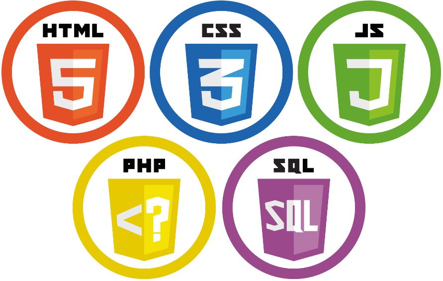
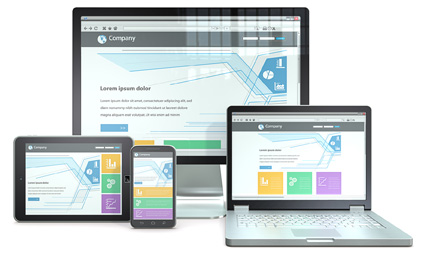

Que tal dar um passo para o mundo virtual criando um site para a sua empresa?
A Tom Virtual pode lhe ajudar!
Em um mundo cada vez mais digital, um site ou um sistema online é fundamental para qualquer negócio.
SERVIÇO
Fazer uso das principais ferramentas do mercado e técnicas de responsividade, onde as páginas se adequem ao aparelho do cliente: celular, tablet ou desktop.
Construção de sites
- Desenvolvimento de páginas web
- Sites estáticos ou interativos com seus usuários
Manutenção de páginas
- Manutenção de páginas existentes
- Modernização e novas funcionalidades nas páginas
Sistemas Web
- Controle o seu negócio onde estiver via internet
- Gestão de negócios na palma da mão
Ações promocionais
- Landpages para promoções de novos produtos ou serviços
- E-mail marketing personalizados e ações em redes sociais
CURRÍCULO
Fuçador por natureza. Sempre recebendo bons feedbacks pela capacidade em buscar respostas e soluções para problemas. Desse modo, a carreira se desenvolveu em setores comerciais, administrativos e supply chain. Sempre com destante em funções envolvendo tecnologias. Tendo experiências em sistemas SAP, Microsiga, BI, Excel para montagem de KPI’s e relatórios, entre outras tecnologias.
Formado em análise e desenvolvimento de sistemas, pela Unip. Estudante de engenharia da computação pela Universidade virtual do estado de São Paulo, a UNIVESP. Sempre em busca por atualizações e novas tecnologias para desenvolver novos projetos e sempre se colocando em contato com salas de aulas e profissionais da área.
Abaixo cursos recentes e que possibilitaram novos aperfeiçoamentos:
Udemy: machine learning e data science com python - Em curso
Senac: Programador web com HTML, CSS, PHP, JavaScript e MySQL - 2018
IDPH: Seminário intensivo instrumental: Como falar outros idiomas – 2018
SENAI: Instalador-Reparador de Redes com cabeamento estruturado - 2017
SENAC: Excel 2016 com VBA - 2017
SENAI: Excel avançado - 2015
Fundação Bradesco: Produção gráfica e Photoshop - 2015
Entre em contato
(11) 9.8865-0030
elton.rsilva@hotmail.com